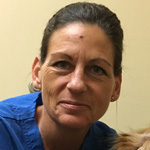
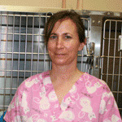
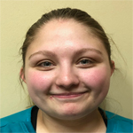

Lisa
Receptionist since 2004. Lisa is an excellent listener and understands how important your pet is to you and to us,
in case an emergency should arise. Lisa has a very important job of keeping our clinic running smoothly with all the
scheduled appointments and walk-ins into our clinic.
Denise
Receptionist since 2018. Denise has been a receptionist since 2000 in veterinary medicine.
Denise enjoys gardening and spending time with her cat.
Mary
Receptionist since 2009.
Angi
Veterinary technician since 2007. A graduate from Colorado Mountain College in 1987 with a AAS in
Animal Health Technology. Angi is a CVT and an active member of the Colorado Association of Certified
Veterinary Technicians since 1987 and the Florida Veterinary Technicians Association since 1988. Joined
the VECCS in 2003 and over the years has worked with many Veterinarians in general and emergency animal
medicine.
Nicki
Veterinary technician since 2014. A graduate from the Wyoming School of Animal Technology in 1982, with an
Associates of Applied Science in Veterinary Technology. She worked from 1982 to 2001 as a Veterinary Technician
for the Animal Medical Center in Omaha, Nebraska. Nicki has also been an instructor of Veterinary Technology
from 2006 to 2009 at IWCC.
Shannon

Veterinary technician since 2017. Shannon is a seasoned technician with 20 years of experience in
the veterinary field including but not limited to certified laser therapy, surgery, client education among many other
facets of the veterinary field.
Shannon spends her time with her Staffordshire Terrier, Gunner and her children and grandchildren.
Stacey

Veterinary assistant since 2009. Worked at the Greyhound Track and Greyhound kennels since 1989.
Claire
Veterinary assistant since 2010. A graduate from Northwest Missouri State University with a Bachelor of Science Degree
in Agricultural Science. Claire has also been a foster home for SOLAS kittens, dogs and puppies.
Sharyl
Veterinary assistant since 2008.
Shawn

Veterinary assistant since 2015. From Humboldt, Nebraska, Shawn has an Associates Degree in Applied Science and General
Business from Metropolitian Community College.
Shawn has also earned a Certificate in Massage Therapy.
Since December 2004, our clinic has been providing specialized pet care medicine, surgery, dentistry and
pharmaceuticals at very reasonable rates to area pet owners. Our clinic was the first Council Bluffs
veterinary clinic to offer laser surgery.
Dr. Barb Lee and Dr. Jody Strohbehn have been married since 1983. They met in pre-veterinary medicine at Iowa State
University in 1974. Dr. Barb Lee grew up in Orono, Minnesota where she showed quarter horses. Dr. Jody Strohbehn is
a native of Council Bluffs. Outside work, they enjoy visiting with their children and traveling. They have a daughter
Amber, who was a chemical engineer and now studying veterinary medicine, and a son Austin who is an MD in ophthalmology
and now doing a fellowship in retina.
Dr. Barb Lee, DVM

A graduate of Iowa State University, she received a bachelor's degree in bacteriology in 1978
and a doctorate in veterinary medicine in 1982. Dr. Lee has been practicing in the metro area since 1982.
Board of Directors:
- Council Bluffs Board of Health since 2006
- Wings of Hope Cancer Support Group 2000 - 2005
- S.O.L.A.S. (Support Our Local Animal Shelter) in Council Bluffs since 2004
- The Council Bluffs Guild of the Omaha Symphony 2003 - 2007
- Midlands Humane Society Board of Health 2005 - 2007
Other Activities:
- Fund raiser for Iowa State K-9 Division
- West Pottawattamie County Extension Council Nominating Committee
- 4-H West Pottawattamie Cat Show Judge
- YMCA Coach
Dr. Jody Strohbehn, DVM
A graduate from Iowa State University College of Veterinary Medicine in 1979. Dr. Strohbehn has been practicing since 1979.
He is a member of the National Humane Society and the Nature Conservancy Omaha Volcon Group, and is also a
Explorers Post Leader and YMCA Coach.
Amber Strohbehn
After nine years as a chemical engineer for Cargill Inc., Amber is a veterinary student at Kansas State University.
Amber will graduate in 2021 with a doctor of Veterinary medicine and join the family's veterinary medicine clinic.
Dr. Angela Richwine, DVM
Dr. Angela Richwine is a 2012 Iowa State College of Veterinary Medicine graduate.
She is originally from Council Bluffs, Iowa.
Dr. Richwine is married to David and they have a son Gabriel.
They also have 2 cats.
Dr. Rachel M. Cox, DVM
Dr. Rachel M. Cox received her Doctor of Veterinary Medicine Degree from Iowa State University College of Veterinary Medicine in 2005.
Dr. Cox is from New Market, Iowa and has 6 horses, 10 dogs and numerous cats.
Dr. Cox enjoys all aspects of veterinary medicine but takes special interest in preventative health care.
Dr. Rebecca Hilderbrand, DVM
Dr. Rebecca Hilderbrand is a 2019 graduate from Iowa State University College of Veterinary Medicine. She is originally from Council Bluffs, Iowa.
She enjoys spending time with family and her 2 dogs. Growing up, she volunteered often at the animal shelter and is looking forward to working with rescues in the community.
Dr. Emily Churilla, DVM
Dr. Emily Churilla is a 2018 graduate from Iowa State College of Veterinary Medicine.
Dr. Churilla was a part of the 2+2 cooperative profession program in veterinary medicine with the University of Nebraska-Lincoln and ISU.
She is married and has a daughter and one dog and was originally from Lincoln, NE.
Dr. Churilla enjoys running and spending time with her family and friends.